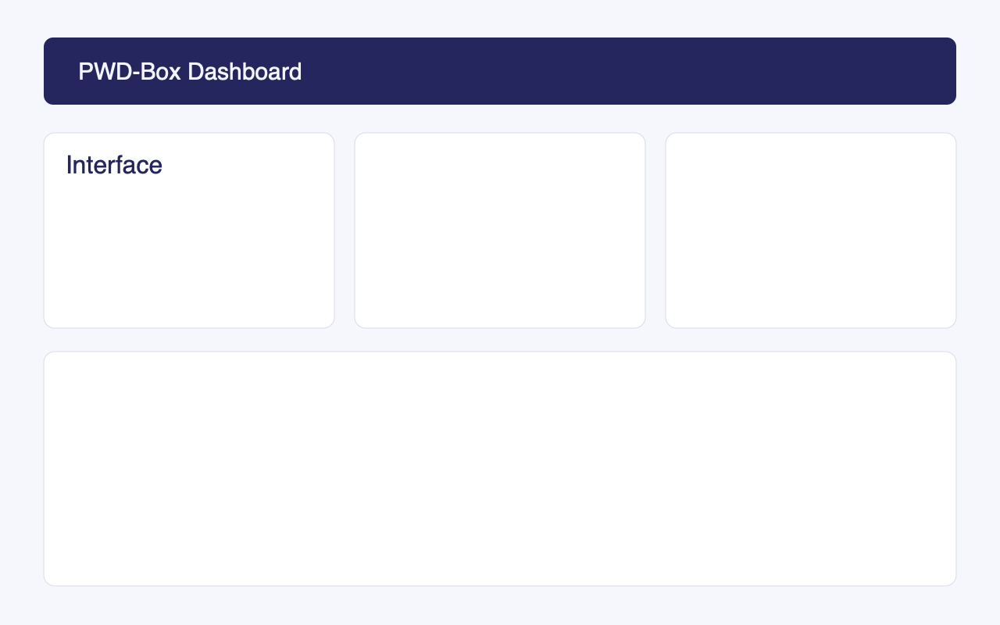
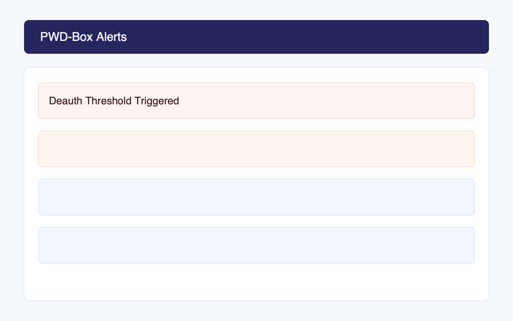
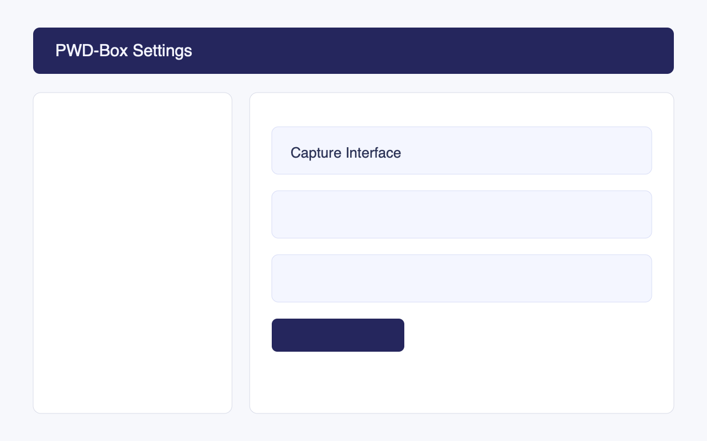

Portable Wireless Defence
PWD-Box: Portable Wireless Defence Box
A Raspberry Pi-based tool for passive Wi-Fi monitoring and real-time deauthentication attack detection.
monitoring-session.sh
Features
Focused on defensive monitoring with practical controls for portable deployment.
Monitors Wi-Fi activity without injecting traffic, preserving passive-only operation.
Detects and reports deauthentication frames instantly to support rapid response.
Built for Raspberry Pi and touchscreen workflows with clear operational views.
Documentation
Full project details are available in the README.md.
Setup Steps
- Clone the repository to your machine.
- Move into the project directory.
- Install dependencies in your preferred Python environment.
- Launch the UI and verify the dashboard loads correctly.
quick-start.sh
$ git clone https://github.com/PiouV2/PWD-Box.git
$ cd PWD-Box
$ python -m src.main --ui
Screenshots
Representative interface views for monitoring and operation.


